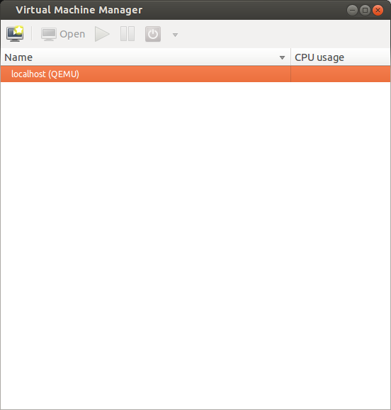
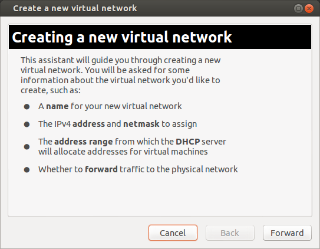
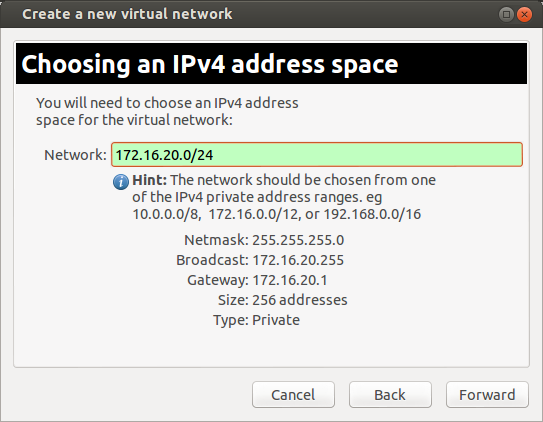
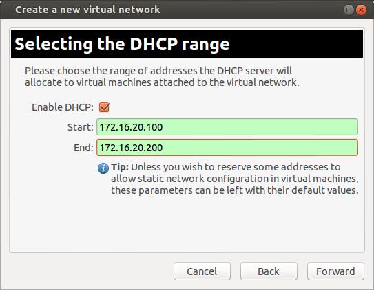
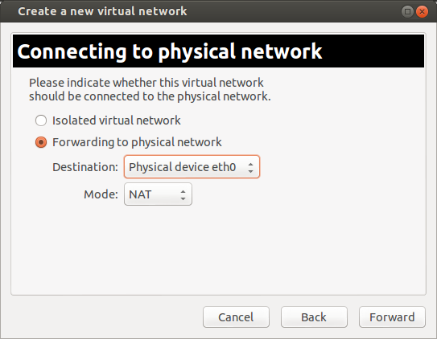
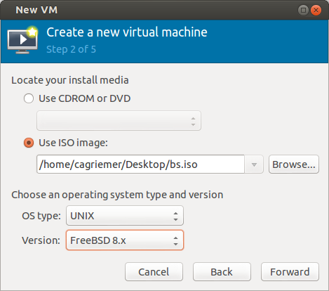
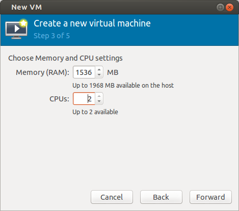

Bundan altı sene önce 2.6.20 çekirdeği ile kullanıma sunulan KVM (kernel-based virtual machines) 2010 civarına kadar geçen süre zarfında çekirdeğe eklenmiş en heyecan verici değişiklik olarak addediliyordu. Duyurulmasından bu yana gün geçtikçe daha kararlı hale gelen ve hızlanan KVM günümüzde pekçok sanallaştırma probleminin altından kalkabiliyor.
KVM’i makinemizde çalıştırabilmemiz için gereken tek ön koşul işlemcimizin sanallaştırma uzantılarını destekliyor olması. INTEL işlemciler için vmx, AMD işlemciler için ise svm adı verilen CPU bayrağı eğer /proc/cpuinfo çıktınızda mevcutsa işlemciniz sanallaştırma uzantılarını destekliyor demektir. Kontrolü şu komut ile yapabilirsiniz.
egrep -c '(vmx|svm)' /proc/cpuinfo
Eğer 0’dan farklı bir sayı görüyorsanız yazının geri kalanındaki komutları çalıştırmanızda bir sakınca yok. Eğer çıktı 0 işe ne yazık ki işlemcinizin sanallaştırma uzantısı desteği yoktur.(Not:BIOS’unuzdan sanallaştırma desteğinin açıldığına emin olun)
Yazının geri kalanında kurumsal ihtiyaçlara yönelik KVM senaryoları yerine ev kullanıcısının ihtiyacını görecek bir senaryo işlenip KVM’e kısa da olsa bir giriş yapılmaya çalışılacaktır.
Peki KVM hangi konuk işletim sistemlerini çalıştırabiliyor?
Windows XP’den Android’e, Slackware’den OpenBSD’ye, Solaris’ten Amiga’ya kadar uzanan geniş bir yelpazede aklınıza gelebilecek hemen hemen her işletim sistemini çalıştırabiliyor. Tüm listeye proje sayfasından [1] ulaşmak mümkün. Gelelim KVM’in konak makinemize kurulumunun nasıl yapılacağına. Ubuntu her zaman olduğu gibi bu sefer de işimizi çok kolaylaştırıyor. Yüklememiz gereken paketler şunlar.
| Paket | İşlevi |
|---|---|
| qemu-kvm | sanallaştırma görevini yapacak yazılım |
| libvirt-bin | servisleri başlatmak gibi işlevleri görecek yazılımlar |
| virt-manager | sanal makineleri oluşturmak ve kontrol etmek için grafik arayüz |
sudo apt-get update
sudo apt-get install qemu-kvm libvirt-bin virt-manager
Kullanıcımızın libvirtd grubuna eklendiğine emin olalım. Bunun için şu komutu çalıştırabiliriz.
groups | grep -c libvirtd
Eğer yukarıdaki komut 1 çıktısını verirse kullanıcımızı libvirtd grubuna dahil edilmiştir. Eğer çıktı sıfırsa kendimizi libvirtd grubuna ekleyelim ki sanal makine oluşturup yönetebilelim. Bunu da şu komutla gerçekleştiriyoruz.
sudo adduser `id-in` libvirtd
Şimdi bilgisayarı yeniden başlatalım. Bu işlem de tamamlandıktan sonra DASH’e virt-manager yazdığımızda görünecek olacak Virtual Machine Manager aracını başlatabiliriz. Eğer her şey yolunda gittiyse bizi şuna benzer bir ekran karşılayacaktır.

KVM ilk kurulumda bizim için NAT ile internete çıkan bir sanal ağ oluşturur. Yani modemimizden doğrudan her sanal makine için IP almak yerine konak makinemizin IP adresini kullanmış oluruz dış ağ için. Bu ağ aygıtı muhtemelen ifconfig çıktısında virbr0 ile ifade edilecektir. Benim bulunduğum ağda DHCP sunucu 10.0.0.0/8 uzayını dağıtmakta. virbr0 sanal ağ aygıtımız ise 192.168.122.0/24 uzayından sanal makinelere IP adreslerini dağıtacak şekilde yapılandırılmış. (varsayılan olarak bu şekilde geliyor) Dolayısıyla aslında yeni bir sanal ağ oluşturmamıza gerek yok. Fakat daha önce de söylediğim üzere temel ihtiyaçları görecek bir senaryo üzerinde duracağımızdan bir adet sanal ağ oluşturup ardından sanal makinelerin yapılandırılmasına geçeceğiz. Virtual Networks sekmesinde sol altta bulunan yeşil + işaretine bastığımızda şu ekranı görmeliyiz.

Forward ile devam ediyoruz ve bize bir ağ adı soruyor. Buraya istediğimiz isimi yazabiliriz. Ben sudotestagi yazıp Forward diyorum.

Gelen ekranda IP uzayımızı seçeceğiz. Genelde ev kullanıcıları için üretilmiş modemler 10.0.0.0/8 ya da 192.168.0.0/16 uzayını kullandığından bu örneğimizde 172.16.0.0./12 uzayından bir aralık seçeceğiz. Örneğin 172.16.20.0/24 Bu sayede 172.16.20.2’den 172.16.20.254’e kadar olan IP’leri sanal makinelerimize atayabileceğiz.

Bir sonraki ekranda DHCP kullanmak isteyip istemediğimiz sorulacak. Eğer sanal makinelere statik IP atamak istemiyorsak kullanmamız yerinde olacaktır. 100 - 200 aralığını dağıtmasını isteyip Forward ile devam ediyoruz.

Geldik en önemli adıma. Bu ekranda daha önce de belirttiğimiz üzere fiziksel ağımıza NAT yapmasını söyleyeceğiz sanal ağımızın. Ayarları aşağıdaki gibi değiştiriyoruz. Eğer internete bağlandığımız aygıt resimde gördüğümüz gibi eth0 değilse, örneğin wlan0 ise, onu seçmemiz gerekiyor.

Forward dediğimizde bize oluşturduğumuz ağın bir özetini gösteriyor. Finish ile devam ediyoruz.

Bu adım yukarıda da belirttiğim üzere opsiyonel bir adım çünkü varsayılan olarak oluşturduğu default ağı da işimizi görecektir. Sadece yeni bir ağın nasıl oluşturulduğunu görmeye çalıştık. Varsayılan olarak sanal makinelere ait disk dosyaları /var/lib/libvirt/images dizini altında tutulur. Sanal makine yöneticisindeki Storage sekmesinde bu dizinin bulunduğu diskte ne kadar yeriniz olduğunu görebilirsiniz. Ben örnek sanal makine olarak PC-BSD 9.1 deneyeceğim. İlk olarak konuk makinemizin diskini oluşturalım.

Storage sekmesinde sağ altta bulunan New Volume tuşuna basıyor ve şuna benzer olacak şekilde dolduruyoruz.

İsim kısımına istediğiniz isimi verebilirsiniz. Formatı raw olarak bırakmanızda bir sakınca yok. Capacity diskinizin büyüklüğünü belirtiyor. Allocation ise şu aşamada ne kadar alanı gerçekten diske tahsis ettiğinizi belirtiyor. Burada ikisine de aynı değeri verip bir sonraki aşamada gerçekten ayırdığımız alanı oluşturmasını bekleyeceğiz. Diskin oluşturulması bittikten sonra sıra yeni işletim sistemimiz için kaynak ayırılmasına geliyor. Fakat önce elimizde ne var kontrol edelim.
Kuracağımız konuk işletim sisteminin .iso dosyası, yeni bir sanal ağımız ve kurulum için kullanacağımız disk alanımız. Eğer bu üçünden biri eksikse yukarıdaki adımlardan birini eksik yapmışsınız demektir. Yok değilse sanal makine yöneticisine gelip üzerinde play tuşuna benzer üçgen işareti olan monitör tuşuna basıyoruz. (Create a new virtual machine) Bize makinemize vereceğimiz isimi ve ne şekilde kurulum yapacağımızı soruyor. Elimizde .iso dosyası olduğundan onu seçiyoruz ve Forward tuşuna basıyoruz. Gelen ekranda kurulum imajının bulunduğu dizini göstermemiz gerekiyor. OS type ve version çok önemli değiller fakat kurulumunu yaptığınız işletim sistemi ya da benzeri bir işletim sistemini gösterebilirsiniz.

Bir sonraki ekranda sanal makine için ayıracağımız RAM ve CPU değerlerini seçiyoruz. Ben 1.5 GB RAM ve 2 CPU vereceğim.

Sonraki ekranımız disk seçimini yaptığımız ekran. Burada ister yeni bir disk oluşturur istersek de daha önce oluşturduğumuz diski seçebiliriz. Biz daha önce oluşturduğumuzdan ikinci seçenekle devam ediyoruz.

Sonraki aşamada bize oluşturacağımız sanal makinenin bir özetini gösteriyor. Burada Advanced Options altında kendi oluşturduğumuz sanal ağı seçeceğiz ve Finish ile sanal makine oluşturma işini tamamlayacağız.

Eğer her şey yolunda gittiyse bizi aşağıdaki gibi PC-BSD iso’sundan açtığı bir konsol ekranı karşılayacak. PC-BSD kurulumuna burada değinmeyeceğiz.
Bu aşamada hata alırsanız aldığınız hata RAM miktarınız ile ilgili olabilir. Bilgisayarınızdaki fiziksel RAM konak işletim sistemi ve konuk işletim sistemlerinize ayırdığınız RAM kadar ya da daha büyük olmalı. Yani konak makinenin çalışması için gereken RAM miktarını ihmal etmeyin. Eğer kernel modülünün yüklenemediği ile alakalı bir hata alırsanız bilgisayarınızı yeniden başlatmayı deneyin.

Makinemiz çalışırken sanal makine yöneticisinde şu şekilde gözükecektir.

Sanal makinenin konsol ekranından kaçmak için klavyenin sol tarafındaki CTRL ve ALT tuşlarına aynı anda basmamız yeterli olacaktır. Ben 10GB alan ile PC-BSD GNOME’da problem yaşadım. X ile ilgili de kısmi sorunlar çıktığından gdm’i kapatıp, sshd’yi aktif ettikten sonra pf’i devre dışı bırakarak konak makineden SSH ile kullanıcıma eriştim. root ile erişmek için bir de sshd_config dosyasını düzenlemelisiniz.
/usr/local/etc/rc.d/gdm stop
root olarak giriş yapın
nano /etc/rc.conf (sshd_enable="YES")
pfctl -d

Öte yandan CentOS, Ubuntu gibi sistemlerde yaptığım denemelerde herhangi bir sorun çıkmadı. Sanal makineleri kapatmak için normal işletim sistemimizi kapatırmış gibi kendi menülerini kullanabilir ya da sanal makine konsolunu görüntüleyen alanın üzerindeki kırmızı açma kapama tuşundan ilgili seçeneği seçebiliriz. Yine sanal makine konsolunun bulunduğu ekranın üst tarafında bulunan i tuşu ile sanal makinemize ait özellikleri inceleyebilir ve değiştirebiliriz. Kapalı sanal makineleri başlatmak için virt-manager’ı çalıştırıp ilgili sanal makineye sağ tıkladıktan sonra çalıştır dememiz yeterli olacaktır.
KVM genel hatlarıyla işte bu kadar basit. Ubuntu 3 paket sayesinde sisteme çok güçlü bir sanallaştırma çözümü eklememize izin veriyor. Kickstart ile kurulumların otomatikleştirildiği bir KVM ortamında sanal makine provizyonu yapmak da oldukça kolay. Üstelik yukarıdaki işlemlerin tümünü komut satırından da gerçekleştirebileceğimizden uzaktaki makinelerle çalışmak gerçekten kolaylaşıyor.
Yazıyı burada bitirirken VirtualBox’a alternatif olarak KVM kullanmanız için gereken tüm bilgileri paylaştığımızı umuyoruz. Yaşadığınız sorunları her zamanki gibi forumumuzda dile getirebilirsiniz.